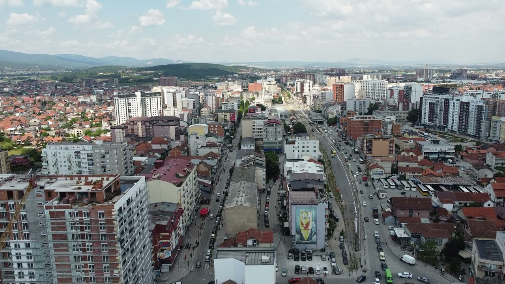

Dine Spot
About Us
Kjo faqe ueb është krijuar me qëllim që të prezantojë dhe promovojë restorantet më të njohura dhe më të vizituara në qytetin e Ferizajt. Platforma synon t’u ofrojë vizitorëve informacione të qarta, të organizuara dhe të besueshme rreth vendeve të ushqimit, duke përfshirë përshkrimet e restoranteve, shërbimet që ato ofrojnë dhe përvojën kulinare që ato sjellin.
Kjo faqe është realizuar si projekt akademik dhe personal zhvillimi në fushën e Web Development, me fokus në dizajn të qartë, navigim të lehtë dhe paraqitje funksionale të përmbajtjes. Qëllimi kryesor është krijimi i një platforme informuese që mbështet bizneset lokale dhe ndihmon qytetarët dhe vizitorët të orientohen më lehtë në zgjedhjen e restoranteve. Faqja do të përditësohet gradualisht me informacione të reja dhe përmbajtje shtesë, me synim rritjen e saktësisë dhe kualitetit të paraqitjes.

Ferizaj njihet për zhvillimin e shpejtë urban dhe për skenën e pasur gastronomike, ku ndërthuren tradita, kuzhina lokale dhe konceptet moderne të ushqimit. Përmes kësaj faqeje, vizitorët kanë mundësinë të zbulojnë restorante të ndryshme sipas stilit, ambienit dhe llojit të ushqimit që preferojnë.